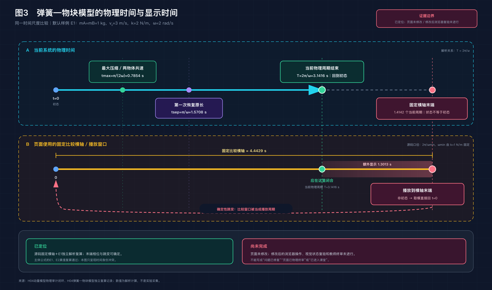
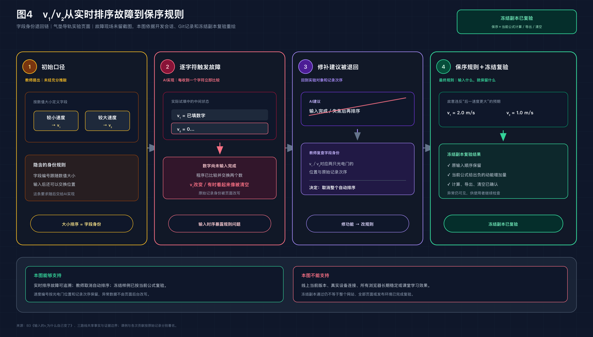
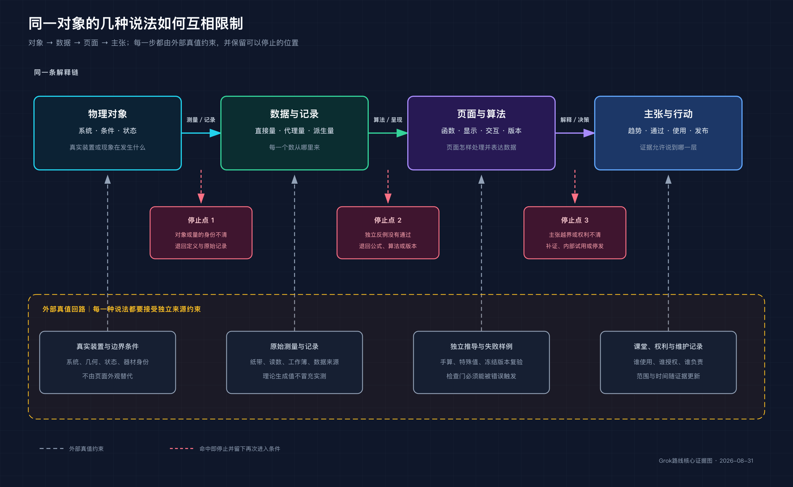
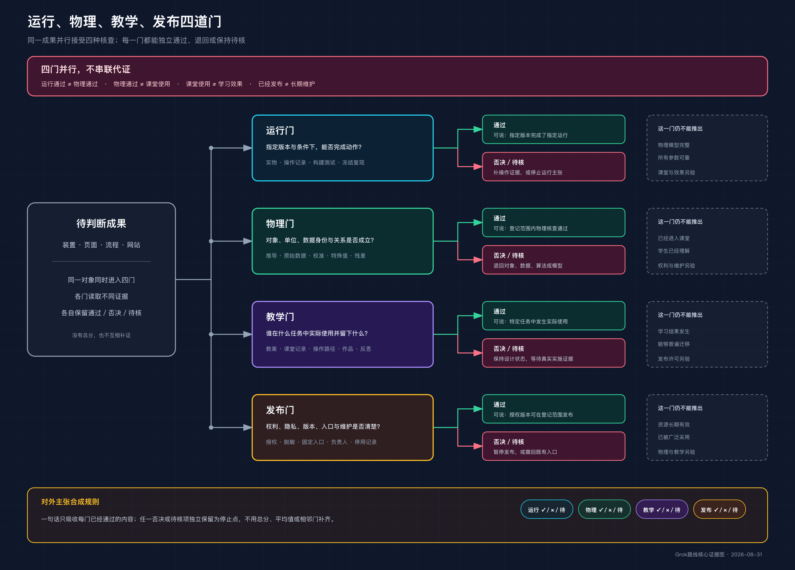

FABLE
故事生出工具
教师熟悉的实验核查逐步进入页面、学生作品、AI学徒、网站和公开主张。案例先改变证据直觉，工具随后才出现。
- 阅读温度最强
- 器物—教师—物理—AI双声部
- 章末“工具箱／试一试”
Fable用故事生出工具，GLM让交付物接力，Grok让每条陈述接受盘问。这里集中呈现三版正文、六幅真实文件、共享证据底线和作者下一步要作的决定。
规模只标识快照。真正要比较的是：案例怎样推动读者，工具从哪里长出来，哪一种声音值得承担整本书。
| 路线 | 连续结构 | 字符数 | 行数 | 一句话声音 |
|---|---|---|---|---|
| Fable | 四部十二章 | 47,293 | 1,679 | 故事生出工具 |
| GLM | 四篇十二章 | 46,679 | 1,751 | 交付物逐章接力 |
| Grok | 四篇十一章 | 33,880 | 976 | 陈述接受反证盘问 |
教师熟悉的实验核查逐步进入页面、学生作品、AI学徒、网站和公开主张。案例先改变证据直觉，工具随后才出现。
同一个项目不断升格，上一章形成的卡、表、Brief和规则会直接进入下一章。每升一级，新增一项可见责任和停止条件。
同一对象在读数、曲线、动画、诊断和公开结论中不断换说法。每条说法都要交代来源，并允许独立检查把它推翻。
这些是证据型重绘的实际文件，不是课堂照片或实验数据图。点击可打开SVG或2倍PNG原图。

看清同方案分析已经发生，跨方案比较没有自然发生。
SVGPNG
每次对象身份改变，都保留一个可回查、可撤回的位置。
SVGPNG
主体解析关系成立时，显示时钟仍可能描述了另一段过程。
SVGPNG
要求、首版、故障、退回和冻结版成为可交接的项目记录。
SVGPNG
每增加一种表示，也增加一条可以被独立证据反驳的陈述。
SVGPNG
任何一项通过，都不能替另外三项回答自己的问题。
SVGPNG声音可以不同，事实、作者归属、物理关系与权利身份不能为了差异而改变。打开完整共享事实底座
逐句精校可以稍后进行。下面这些问题若不先解决，会直接改变案例归属、项目状态或是否能够公开。
Fable写已有预审原型和内部测试；Grok写只有任务书、尚未实现。
三版共同使用同一案例，匿名叙述容易生成一人独自完成的印象。
谁提出、谁实现、谁退回、谁复验，应从项目记录落实。
任务组织、网页分析和个案授权是三种不同责任。
它承担三版收口，当前只确认2025年12月16日驳回决定。
H04待改、超失重同步链待接通；本地网站结构不自动等于线上状态。
三版正文没有再次改写；统一入口只把分散成果放进同一个判断流程。
正文、进度、审阅和图件分散在三条路线目录；作者需要来回寻找，容易一边读故事一边陷入事实细节。
一个页面同时呈现规模、声音、六幅图、共享底线、P0/P1待核项和DOCX入口。
第一轮只判断整本书，第二轮处理趋同与取舍，第三轮才按作者和原件核事实。
为减少先读路线的优势，四位作者采用不同起始顺序。完整操作与反馈模板见review.md。
浏览本页与六幅图，知道三种声音。
一次只读一版，不开进度台账，不逐句改事实。
读趋同审计，决定主骨架、必留声音与重复案例。
先解P0，再由作者分别核本人材料、授权和图件。
记录骨架、迁入内容、删除内容、负责人和完成条件。
“可比较阅读”已经完成；“事实终审”和“出版定稿”仍是后续工作。
| 完成标准 | 状态 | 说明 |
|---|---|---|
| 统一审阅入口与文字说明 | ✓ 完成 | 本页、index.html与review.md |
| 三版正文／进度／路线审阅／配图直达 | ✓ 完成 | 每版四个工作入口 |
| 六幅已生成图件集中预览 | ✓ 完成 | 每幅均链接SVG与PNG |
| 共享证据边界和声音审计 | ✓ 完成 | 直达01与05共享文件 |
| 作者选择主路线或融合方案 | △ 人工确认 | 统一入口不代替作者判断 |
| 跨版冲突、署名和授权解决 | × 未完成 | 已定位，尚待原件与作者回答 |
| 出版定稿 | × 未完成 | 仍需事实终审、图权、试读和统一排版 |
DOCX已经存在。先顺读和批注，不把当前版本标成出版定稿。
有了这七项，就可以进入真正的融合和精修。